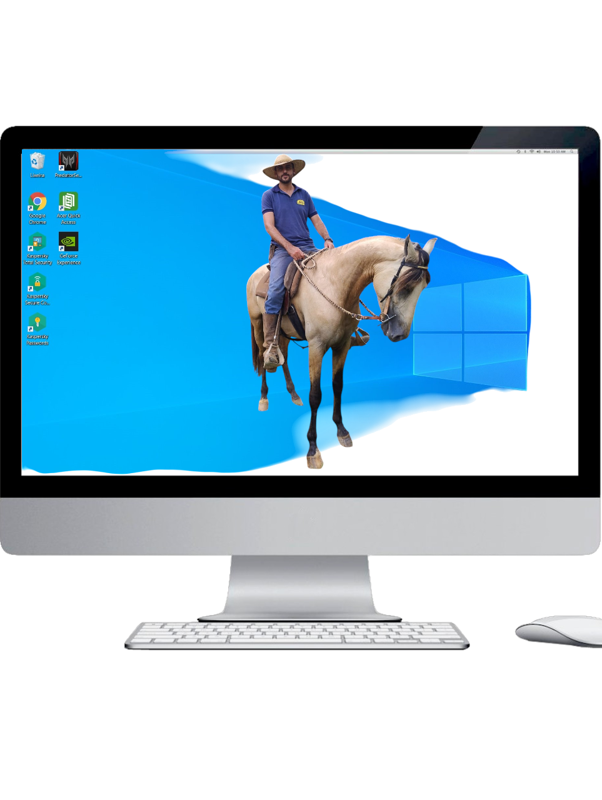

Com uma trajetória diversificada, atuei em áreas como vendas, estoque, motoboy e treinamento de cavalos, minha paixão desde a infância.
Passei um ano e meio em Portugal, onde vivi uma experiência incrível que ampliou minha visão de mundo e fortaleceu qualidades como disciplina e paciência, essenciais tanto na vida quanto na tecnologia.
Retornando ao Brasil, comecei a trabalhar como monitor de informática e, ao estudar programação, passei a perceber a lógica por trás de diversas situações do meu dia a dia. Isso intensificou minha curiosidade pela tecnologia e me motivou a buscar a PUC Minas, onde encontrei o suporte necessário para trilhar meu caminho profissional no universo tecnológico.
Atualmente, curso Análise e Desenvolvimento de Sistemas,trabalho com C# .NET Core MVC, JavaScript, HTML, CSS e SQL. No projeto Cosmepédia, atuei no front-end e back-end, aplicando Scrum para entregas ágeis. Trabalhamos também com Git, GitHub e Figma para colaboração e versionamento de código.
Busco uma oportunidade de estágio em desenvolvimento de software para crescer como Full Stack Developer, sempre disposto a aprender e contribuir.
